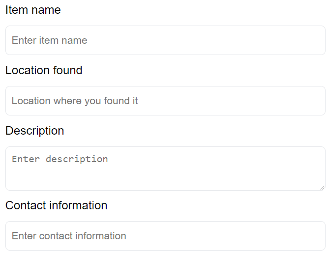
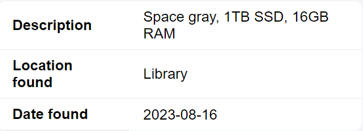
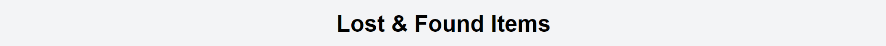
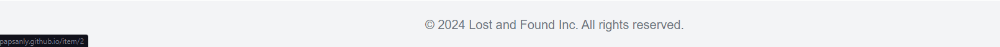

button {
cursor: pointer;
color: #ffffff;
background-color: #6366f1;
display: inline-flex;
align-items: center;
justify-content: center;
padding: 8px 16px;
}
main {
flex: 1;
max-width: 900px;
display: flex;
gap: 2rem;
justify-content: space-around;
}
input, textarea, button {
height: 40px;
padding: 8px;
font-size: 0.875rem;
border-radius: 0.375rem;
border: 1px solid #e5e7eb;
}
textarea {
height: 60px;
resize: vertical;
}
button {
cursor: pointer;
color: #ffffff;
background-color: #6366f1;
display: inline-flex;
align-items: center;
justify-content: center;
padding: 8px 16px;
}
header, footer {
width: 100%;
background-color: #f3f4f6;
padding: 16px 0;
text-align: center;
}
a {
text-decoration: none;
color: unset;
}
table {
width: 100%;
border-collapse: separate;
border-spacing: 0;
border-radius: 8px;
overflow: hidden;
background: white;
}
th, td {
padding: 8px 16px;
text-align: left;
border-bottom: 1px solid #eaeaea;
}
form {
display: flex;
flex-direction: column;
gap: 0.7rem;
}
form > div {
display: flex;
flex-direction: column;
gap: 0.75rem;
}




